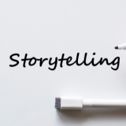
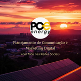
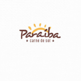
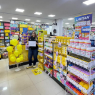
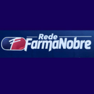

Roteiros de Vídeo – Arraiá da Farmanobre
Desenvolvi um conjunto de roteiros promocionais para a campanha “Arraiá da Farmanobre”, com o objetivo de atrair o público e reforçar a identidade da marca...
Os roteiros foram criados com base em estratégias de engajamento e adaptados para diferentes formatos e unidades da rede, mesclando humor, urgência, linguagem regional e dinamismo.
A campanha teve foco em conversão, ambientação temática e conexão com o público, promovendo descontos de até 80% e criando uma narrativa envolvente e alinhada ao calendário sazonal.
Esse projeto demonstra minha habilidade em roteirização criativa, branding sazonal e produção de conteúdo com foco em resultados.
Leia mais...
Ver Roteiro

Storytelling para Instagram Stories – Arraiá da Farmanobre
Desenvolvi uma campanha criativa de storytelling para os Stories do Instagram da Farmanobre, com roteiros personalizados para diferentes unidades...
A estrutura da campanha foi baseada em seis blocos narrativos fixos, adaptados de forma estratégica para cada unidade da rede. Utilizei elementos como vlog, games, depoimentos e CTA com senso de urgência.
A proposta garantiu consistência visual e verbal à marca, aumentando o engajamento e reforçando o posicionamento da Farmanobre como próxima e relevante para o seu público. A campanha teve foco em alcance regional, conversão em loja física e comunicação emocional.
Esse projeto demonstra minha habilidade em roteirização estratégica para redes sociais, storytelling com foco em resultado e criação de experiências digitais alinhadas à identidade da marca.
Leia mais...
Ver Storytelling

Diagnóstico de Mídia Social – Rede Farmanobre
Realizei uma análise estratégica do perfil @redefarmanobreoficial no Instagram utilizando a metodologia SWOT. O diagnóstico apontou pontos fortes, fraquezas, oportunidades e ameaças...
O estudo culminou em um plano de ação para melhorar o posicionamento da marca no digital. As recomendações incluíram a produção de conteúdos educativos e interativos, refinamento visual do feed, maior engajamento com o público e aproveitamento de datas sazonais e temas de saúde pública.
A proposta teve como objetivo reposicionar a marca como referência em saúde e bem-estar na região, melhorar a imagem profissional, aumentar o alcance e o engajamento orgânico nas redes sociais, além de contribuir para o fortalecimento da identidade e diferenciação frente à concorrência no setor farmacêutico.
Esse projeto demonstra minha capacidade de análise estratégica, criação de diagnósticos personalizados e aplicação prática de conceitos de comunicação e marketing digital voltados para resultados concretos.
Leia mais...
Ver Diagnóstico

Palestra Dra. Miau - Uma Despedida com Respeito e Conscientização Ambiental | Educação Socioambiental
A Palestra Dra. Miau surgiu como uma iniciativa voltada à conscientização sobre a importância de oferecer uma despedida respeitosa aos animais de estimação...
A proposta nasceu da necessidade de abordar, com sensibilidade e responsabilidade, o destino final de cães e gatos que marcaram nossas vidas — destacando como essa prática pode honrar suas memórias e, ao mesmo tempo, contribuir para um futuro mais saudável e sustentável.
Mais do que informar, o projeto tem como objetivo emocionar e educar. Por meio de uma linguagem empática, clara e acessível, a apresentação aborda os benefícios emocionais para os tutores e os impactos ambientais positivos de práticas conscientes, como o enterro adequado. A palestra também busca quebrar tabus e abrir espaço para o diálogo sobre questões que, embora delicadas, merecem atenção e respeito.
Alinhada aos Objetivos de Desenvolvimento Sustentável (ODS) da ONU, especialmente os ODS 3 (Saúde e Bem-Estar), ODS 11 (Cidades e Comunidades Sustentáveis) e ODS 15 (Vida Terrestre), a iniciativa reforça o compromisso com a educação ambiental, o cuidado com o solo e o bem-estar coletivo.
Este projeto é um exemplo de como a comunicação pode ser usada como ferramenta de transformação social, combinando afeto, informação e responsabilidade ecológica.
Leia mais...
Ver Projeto

Planejamento de Comunicação e Marketing Digital com Foco em Redes Sociais
Desenvolver o planejamento de comunicação e marketing digital da PO Energy foi um processo estratégico e criativo...
guiado por uma análise profunda do cenário digital atual da empresa. Comecei com um diagnóstico completo do público-alvo, concorrência e presença online, utilizando ferramentas como a análise SWOT para mapear oportunidades e desafios. A partir disso, defini objetivos claros como a geração de leads, o fortalecimento da marca e a construção de uma comunidade online engajada. Estruturei estratégias específicas para redes sociais, marketing de conteúdo, tráfego pago e SEO, sempre pensando na personalização das mensagens para cada plataforma. O plano também contou com um cronograma editorial detalhado e metas mensuráveis, garantindo controle e otimização contínua. Essa experiência me permitiu aplicar conhecimentos de branding, planejamento estratégico e marketing digital de forma integrada, com foco em resultados reais para o negócio.
Leia mais...
Ver Projeto
Redação Otimizada para Blog Institucional
Este projeto consistiu na criação de um artigo informativo e otimizado para blog com o tema “Atas de Registro de Preços no Governo: Como Funcionam e Quais as Vantagens?”...
A proposta foi traduzir um conteúdo técnico e legal em uma linguagem acessível e clara, voltada a públicos com pouco ou nenhum conhecimento sobre processos de compras públicas. O principal desafio foi transformar informações complexas sobre leis, decretos e mecanismos de contratação pública em uma narrativa simples, prática e atrativa para o leitor. O texto foi estruturado com técnicas de SEO, uso de subtítulos, exemplos práticos e uma chamada para ação (CTA), tornando-o adequado para ambientes institucionais digitais que valorizam a transparência, eficiência e a educação do cidadão.
Leia mais...
Ver Projeto

Copy para Redes Sociais - Paraíba Carne de Sol
Atuei como redator responsável pela criação dos textos para as redes sociais do restaurante Paraíba Carne de Sol, com o objetivo de reforçar a identidade nordestina da marca e promover seus eventos, pratos e experiências gastronômicas de forma criativa, leve e envolvente....
Minha principal entrega foi um cronograma completo de conteúdos com foco em engajamento e conexão com o público, incluindo:
Textos promocionais para os pratos executivos do dia (frango, costelinha e carne de sol);
Chamadas para happy hour e música ao vivo;
Conteúdos afetivos voltados para momentos em família;
Posts semanais com a agenda musical da casa.
Todos os copies foram pensados para reforçar o tom de voz regional e autêntico da marca, utilizando expressões típicas do Nordeste e estimulando a interação com o público através de perguntas, marcações e sugestões.
Leia mais...
Ver Projeto

Cobertura de Ação Comercial - Cimed
Produzi a cobertura visual da ação de um representante comercial da Cimed, desenvolvendo materiais dinâmicos e alinhados à identidade da marca para redes sociais. A entrega envolveu a criação de elementos visuais minimalistas, artes animadas e abertura de vídeo no estilo Instagram Stories...
O projeto consistiu na construção de uma narrativa visual moderna e profissional para reforçar a presença da representante Cimed nas redes sociais. Entre as principais entregas estão:
- Criação de elementos gráficos minimalistas (linhas, ícones, setas e logo estilizada);
- Desenvolvimento de uma abertura de vídeo em formato vertical (1080x1920px), com fundo amarelo característico da marca, animações suaves e estética moderna;
- Adaptação para o formato de Story do Instagram, respeitando o padrão visual da Cimed;
- Organização dos materiais para facilitar a edição e a publicação em diferentes plataformas digitais.
O trabalho teve como foco traduzir a energia, inovação e proximidade da representante da Cimed com seu público, utilizando técnicas de design responsivo e storytelling visual.
Leia mais...
Ver Projeto

Vídeo Promocional – Rede Farmanobre
Desenvolvi um vídeo institucional para a Rede Farmanobre, focado em transmitir acolhimento, empatia e confiança ao público da marca. A peça foi pensada especialmente para redes sociais, reforçando o cuidado e o atendimento humano como diferenciais da farmácia...
Este vídeo promocional da Rede Farmanobre foi criado com o objetivo de gerar identificação e confiança com o público. Todo o conteúdo foi elaborado com foco no emocional, traduzindo o compromisso da marca com o cuidado e o bem-estar dos clientes.
Atuei nas seguintes etapas:
- Criação do roteiro e da estrutura narrativa do vídeo;
- Escolha da trilha sonora adequada para reforçar a mensagem emocional;
- Direção criativa e edição completa do material, com cortes suaves, ritmo harmonioso e estética humanizada;
- Adaptação para formatos otimizados para redes sociais e mídia digital.
O resultado é um conteúdo audiovisual direto e impactante, que reforça a imagem da Farmanobre como uma farmácia próxima, confiável e sensível às necessidades das pessoas.
Leia mais...
Ver Projeto

Gerenciamento Instagram - Farmanobre
Atuo no gerenciamento do perfil oficial da Rede Farmanobre no Instagram, sendo responsável pela criação de conteúdo estratégico, desenvolvimento de copywriting persuasivo e design visual alinhado à identidade da marca...
Atuo no gerenciamento do perfil oficial da Rede Farmanobre no Instagram, sendo responsável pela criação de conteúdo estratégico, desenvolvimento de copywriting persuasivo e design visual alinhado à identidade da marca.
Minhas atividades incluem:
- Criação de peças gráficas com foco em campanhas promocionais, informativas e institucionais;
- Redação de textos criativos e humanizados para legendas e anúncios;
- Planejamento e execução de estratégias de engajamento com a comunidade;
- Análise de desempenho das publicações para otimização contínua dos resultados.
Tudo isso com o objetivo de fortalecer a presença digital da marca, comunicar com clareza e empatia, e aproximar ainda mais a Farmanobre de seus clientes.
Leia mais...
Ver Projeto